Diamond Shapes
Diamonds are cut into many different shapes, each having its own unique sparkle and purpose. For example, round cut diamonds are typically used for engagement rings while heart cut diamonds are most often used for pendants. Hover over the diamond shapes below to find information about each one:
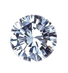
Round
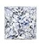
Princess
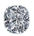
Cushion
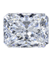
Radiant
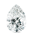
Pear
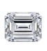
Emerald
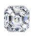
Asscher
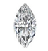
Marquise
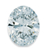
Oval
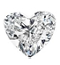
Heart
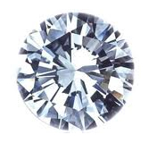
Round Brilliant
The most common diamond shape sold today, round cut diamonds have 58 facets that shine brilliantly when cut correctly. It is used on almost all types of diamond jewelry, such as engagement rings, diamond stud earrings, bracelets, and necklaces.

Princess
A relatively new cut and quickly gaining popularity, princess cut diamonds are most often used on engagement rings and tennis bracelets. It is a square shaped diamond cut with numerous sparkling facets.
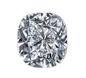
Cushion
This antique cut is very popular for engagement rings, especially when it is surrounded by a "halo" of diamonds. It is very similar to the oval cut diamond in terms of shape and contains very large facets.
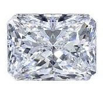
Radiant
The radiant cut diamond is either square or rectangular, with 70 facets to maximize the effect of its sparkle. The design of this cut requires a lot of skill to make so that more light is directed toward the middle of the diamond to product maximum brilliance.

Pear
This tear drop-shaped diamond can be used for many different types of jewelry, such as pendants, earrings, or complementary stones on rings. With its single point and round end, it creates a slimming effect on fingers when used for engagement rings.
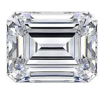
Emerald
This rectangular shaped diamond with cut corners is easily identified by the "flat steps" that are cut into the diamond. Since it lacks the facets (ie. cuts) that other diamonds, inclusions and color are more pronounced so you should take this into account when buying it.
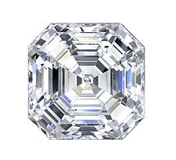
Asscher
Developed in Holland in 1902 by the Asscher Brothers, the asscher cut diamond is cut with stepped squares and cropped corners, closely resembing the rectangular emerald cut diamond. It is commonly used for engagement rings and pendants.
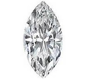
Marquise
A very classic diamond shape, the marquise has an elongated shape with pointy ends. It is most commonly used as the center stone of an engagement ring, often times as a solitare stone to make it stand out.
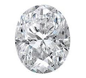
Oval
An even and perfectly symmetrical cut, the oval shape diamond is a popular engagement ring shape for women with small hands. Its elongated shape gives a flattering illusion of length to the hand.
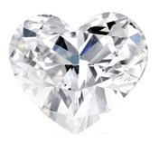
Heart
A beautiful shape to use especially for pendants, this symbol of love is cut in the shape of a heart. It is a very difficult diamond to cut correctly, so make sure to pay close attention to how even the stone is cut.